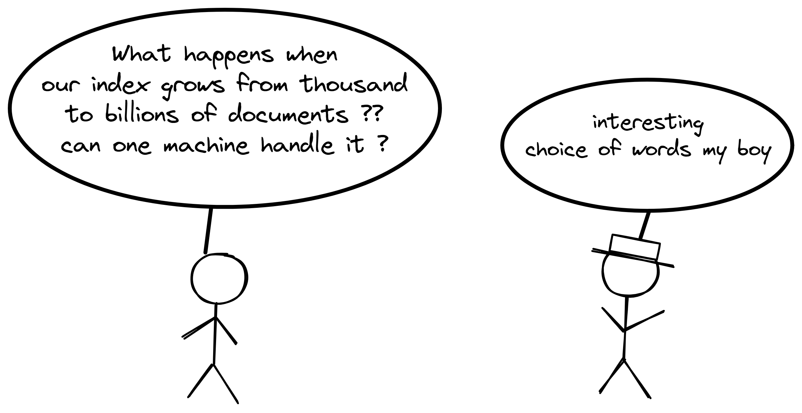
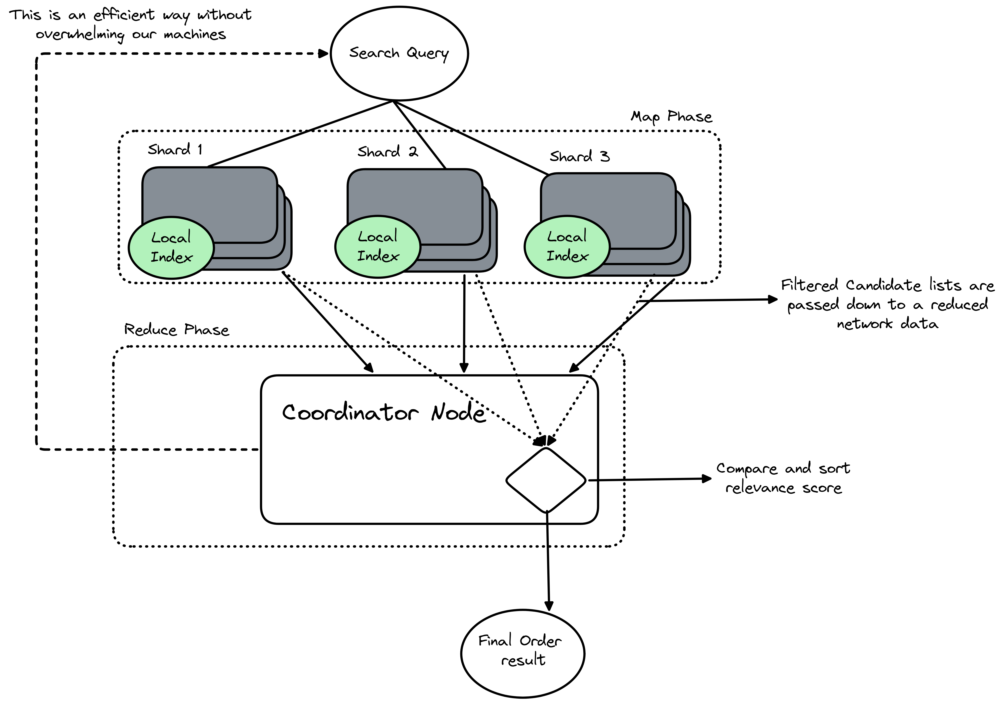

Last time time we discussed on the basics of search engines and two ways on how does it indexes everything. In this blog I will try to share how these search engines work at scale and handles not thousands but millions or billions of documents.

As search engine grows keeping the entire index on a single machine becomes nearly impossible. We eventually hit physical limits regarding RAM, storage space and processing power. Adding more resources to a single machine is known as vertical scaling which is somewhat costly and offers diminishing returns. The only viable path forward is horizontal scaling, which involves distributing the data across many separate computers. This is called Sharding
To distribute data more effectively we need to explain how to route specific documents to specific machines. Two main strategies exist for this allocation which are range based partitioning which assigns documents to shards based on alphaetical or numerical ranges. For example documents starting with A through M go to shard 1 while N through Z go to shard 2. This approach makes range scans easy and effective but can lead to uneven distribution if certain letters are more common. Then comes Hash Based partitioning this applies a mathematical formula to a unique identifier, such as the document ID to deteremine its destination. This ensures an even spread of data across all machines which optimizes storage usage but makes querying by range difficult.
Example of range based partitioning
Now splitting data introduces the distributedd indexing problem. When we replicate data across nodes to secure the loss we must balance consistency and availability. If a user updates a document we must decide how strictly to enforce that update across all replicas before acknowledging success. Relying on consistency would mean that all users see the same data but may slow down the system or have some errors if a node goes down. While if we prioritize availability which will allow the systems to keep functioning during outages but it risks returning stale results.
To answer a user query the system must often ask multiple machines for their portion of the results and combine them. The difficulty is in executing this without the user waiting for the slowest machine in the cluster to respond. If one shard is lagging due to heavy load the entire search experience suffers.
The biggest problem here is the straggler effect. If even one shard is slow (due to high load, hardware issues, or bad luck) the entire query has to wait for that slowest shard. The user doesn’t care which shard is slow they just want fast results.
To allow searching across multiple shards we use a pattern known as scatter gather or query federation. The query lifecycle begins when a coordinator node receives a user request and the node acts as the central conductor. It scatters the request to all relevant shards simultaneously. This parallel execution is important because it allows the system to use the combined processing powwer of of every machine in the cluster and each shard executes the search locally on its own subset of data. Once the shards find their matches they send their individual results back to the coordinator. The coordinator then gathers these partiall results to form a complete response for the user.
The Map-reduce
I am sure till now you have seen many people to read and implement map reduce research paper, inface I did the same :p. While scatter gather describes the flow of data the root computational model is often referred to as Map-Reduce. In the context of a live search query this pattern splits the workload into two distict phases. The Map phase occurs at the shard level when a shard receives a query it maps the search terms against its local index amd ot calculates a relevance score for every matching document and generates a list of candidate results. The shard then filters this list to keep only the most promising candidates which reduces the amount of data that must travel over the network.
Reduce phase takes place on the coordinator node. Here, the system receives the candidate lists from all the shards. It must reduce this multitude of lists into a single, ordered result set. This involves comparing the relevance scores from different shards and sorting them to identify the absolute best matches and by separating the work into a mapping step that runs in parallel and a reduction step that consolidates the output the system can process massive datasets successfully without overwhelming a single machine.

Coordinating and Merging Results
It requires careful sorting logic. Each shard returns a list of documents ranked by relevance based on its local view of the data amd the coordinator cannot simply append these lists together. It must merge them into a single, sorted list. This process involves taking the top results from each shard and re-ranking them to find the global best matches.
If a user requests the top ten results, the coordinator cannot just ask for ten items from each shard. It might need to retrieve the top fifty or one hundred results from each shard to ensure accuracy and this buffer is necessary because a document ranked fifteenth on one specific shard might actually be more relevant globally than the top result on another shard. The coordinator uses a priority queue or a merge algorithm to compare the heads of these lists and select the highest scoring documents until the final page of results is complete.
We are all covered for the second part of this Search Engines series next week we will be moving ahead with the last part of this series which is the study of architecture of ElasticSearch Hope I was able to add some value to your today's learning ^^
Happy Learning Anon